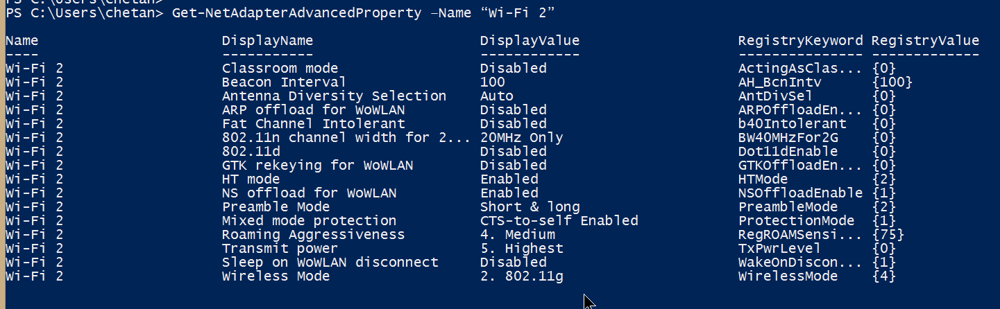
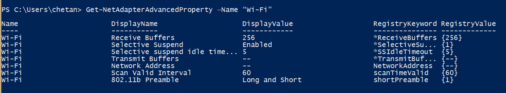

const path = require("path");
const fs = require("fs");const directoryPath = path.join(__dirname, "");
// you can apped any additional directory names form right, and it would make a complete directory location like, path.join(_dirname,"rome","italy","spain/india") would make the directoryPath to be resolved to "current_directory/rome/italy/spain/india"fs.writeFile(filePath, "", function () {
console.log("done");
});
//this statement will empty the file you provide in the filePath, say
const filePath = "index2.html"; // will be the index2.html in the current directory.
//Look for example at the file below:-//requiring path and fs modules
const path = require("path");
const fs = require("fs");
//joining path of directory
const directoryPath = path.join(__dirname, "");
console.log(directoryPath);
const filePath = "index2.html";
//passsing directoryPath and callback function
fs.readdir(directoryPath, function (err, files) {
//handling error
if (err) {
return console.log("Unable to scan directory: " + err);
}
let htmlelements = [];
//listing all files.html using forEach
//DELETE ALL CONTENT
fs.writeFile(filePath, "", function () {
console.log("done");
});
files.forEach(function (file) {
// Do whatever you want to do with the file
if (file.includes(".html")) {
file = file.substring(0, file.length - 3);
htmlelements.push(`<a href="${file}.html">${file}</a><br>`);
}
// console.log(htmlelements);
});
console.log(htmlelements.join(""));
fs.appendFile(filePath, htmlelements.join(""), function (err) {
if (err) {
// append failed
} else {
// done
// htmlelements
}
});
});
Take a look at this article for referencing the current path in which the file is executing:-
https://flaviocopes.com/node-get-current-folder/


wifi properties via powershell
Ideas are cheap, execution is everything.